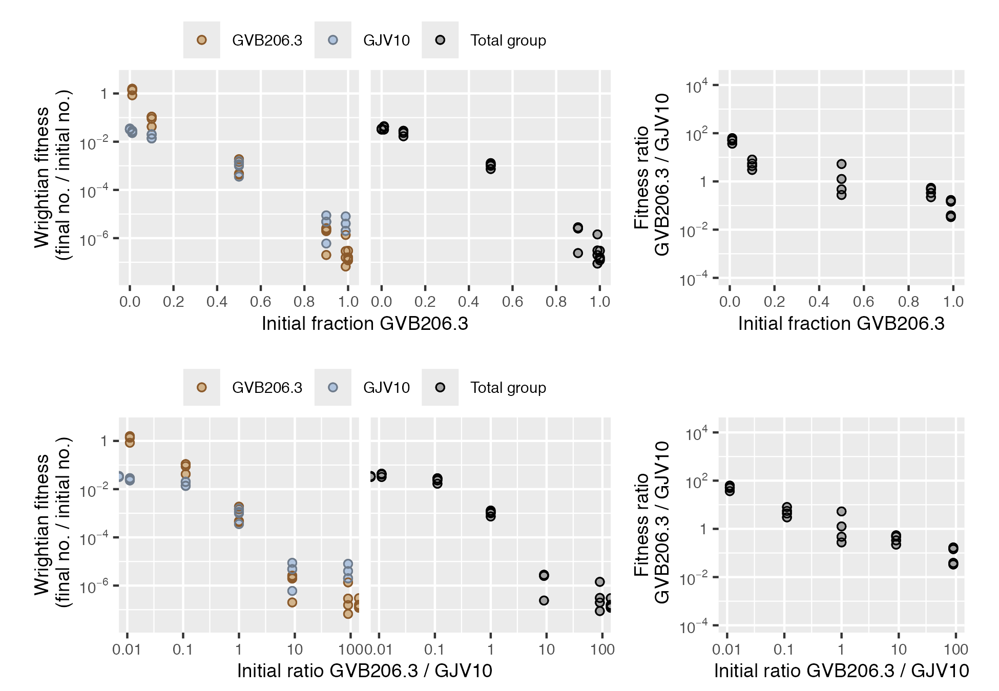
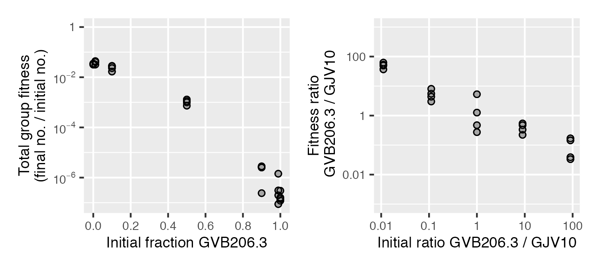
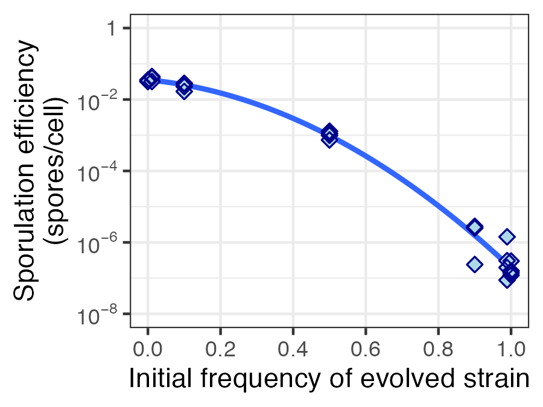

Overview
A common way to study microbial interactions is to mix together two different microbes (different bacteria strains, for example) then measure how their fitness depends on their frequency in the mix. How do they behave differently together compared to on their own?
microbimixr is an R package for analyzing microbial interactions in mix experiments. It helps researchers get the most out of their data by providing convenience functions to calculate and plot fitness measures that are:
- Robust and quantitatively comparable across different species and different types of interaction
- Useful for both individual and group-centered approaches to microbial interactions
- Well-suited to statistical analysis of effect sizes and confidence intervals
Calculate fitness effects
Starting from a data frame of the initial and final abundances of two microbes, calculate best-practice fitness measures using calculate_mix_fitness().
library("microbimixr")
fitness_smith_2010 <- calculate_mix_fitness(
data_smith_2010,
var_names = c(
initial_number_A = "initial_cells_evolved",
initial_number_B = "initial_cells_ancestral",
final_number_A = "final_spores_evolved",
final_number_B = "final_spores_ancestral",
name_A = "GVB206.3",
name_B = "GJV10"
)
)
head(fitness_smith_2010)
#> name_A name_B initial_fraction_A initial_ratio_A_B fitness_A fitness_B
#> 1 GVB206.3 GJV10 1.00000000 Inf 1.200000e-07 NA
#> 2 GVB206.3 GJV10 0.98901099 90.00000000 1.555556e-07 0.00000400
#> 3 GVB206.3 GJV10 0.90000000 9.00000000 2.600000e-06 0.00000480
#> 4 GVB206.3 GJV10 0.50000000 1.00000000 4.280000e-04 0.00156000
#> 5 GVB206.3 GJV10 0.10000000 0.11111111 4.200000e-02 0.01400000
#> 6 GVB206.3 GJV10 0.01098901 0.01111111 8.420000e-01 0.02288889
#> fitness_total fitness_ratio_A_B
#> 1 1.200000e-07 NA
#> 2 1.978022e-07 0.03888889
#> 3 2.820000e-06 0.54166667
#> 4 9.940000e-04 0.27435897
#> 5 1.680000e-02 3.00000000
#> 6 3.189011e-02 36.78640777calculate_mix_fitness() works with most types of microbial abundance data including strain density, total group density, and strain frequency.
Compare fitness measures
To quickly see what fitness measures would be most useful for your dataset, use plot_mix_fitness(). It draws a combined figure with strain fitness, total group fitness, and relative within-group fitness plotted against two measures of mix frequency.
plot_mix_fitness(fitness_smith_2010)
Plot specific fitness measures
Once you know which fitness measures to focus on, you can use microbimixr to visualize them. The simplest way is to use its built-in plot functions. They make figures with default settings suited to fitness data and have some basic graphical options.
fig_total <- plot_total_group_fitness(fitness_smith_2010)
fig_within <- plot_within_group_fitness(
fitness_smith_2010, mix_scale = "ratio", ylim = c(1e-3, 1e3)
)
fig_total + fig_within
You can also use the individual axes and other elements of microbimixr plots with the ggplot2 graphics package.
ggplot(fitness_smith_2010, aes(x = initial_fraction_A, y = fitness_total)) +
scale_x_initial_fraction(name = "Initial frequency of evolved strain") +
scale_y_fitness_total(
name = "Sporulation efficiency\n(spores/cell)", limits = c(1e-8, 1)
) +
geom_smooth(method = "lm", se = FALSE, formula = y ~ poly(x, 2)) +
geom_point_overlap(
shape = 23, fill = "lightblue", color = "darkblue", size = 2
) +
theme_bw()
Installation
Install the development version of microbimixr from GitHub with:
# install.packages("devtools")
devtools::install_github("matryoshkev/microbimixr", build_vignettes = TRUE)Further reading
- smith j and Inglis RF (2021) Evaluating kin and group selection as tools for quantitative analysis of microbial data. Proceedings B 288:20201657. https://doi.org/10.1098/rspb.2020.1657